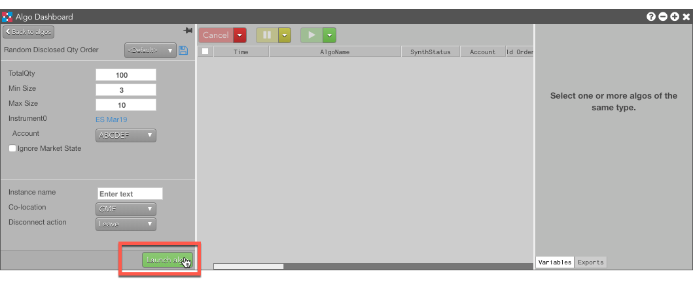
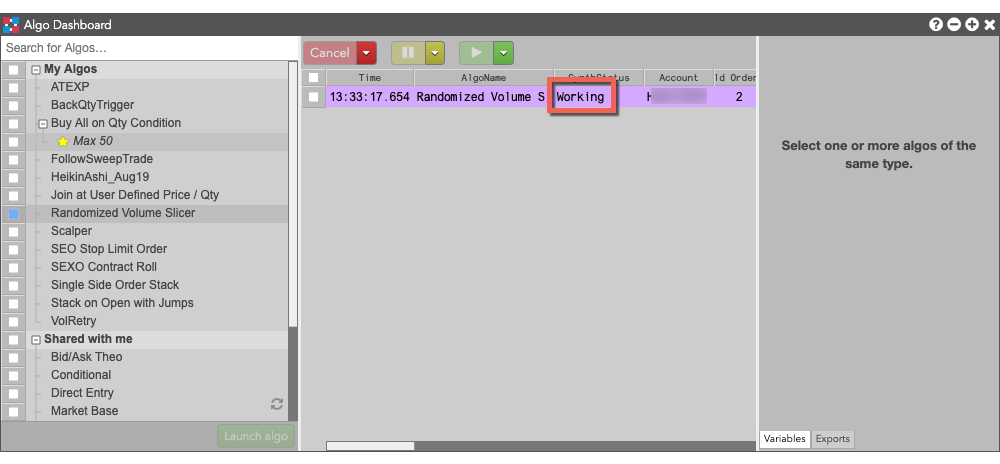
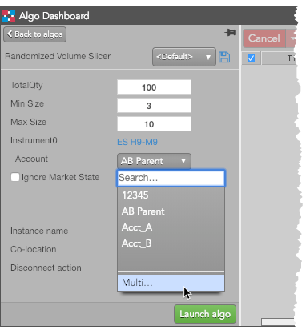
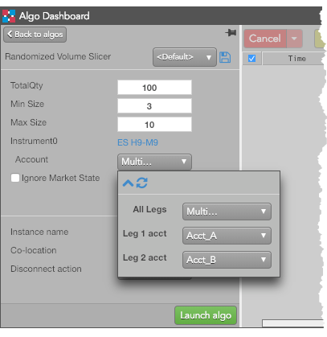

Launching an algo
Note: Users who run large numbers of algo instances simultaneously should check the Algo Server limitations.
To launch an algo from the Algo Dashboard...
-
Select Algo Dashboard from the Widgets menu.

-
Select the algo that you want to launch.

-
Configure the parameters as needed to run the algo.
Note: The Co-location drop down is seeded based on the market of the default instrument in the selected algo. It will also seed when multiple instruments are defined if all instruments are from the same market.
- Specify an Instance name, if desired, to give this instance of the algo a custom name that will appear in the TextTT column of the launch algo.
-
Select which action the algo should take if the client loses its connection to TT:
- Leave to allow the algo to continue running normally.
- Pause to suspend the algo until you manually restart it.
- Cancel to delete the algo.
-
Click Launch algo">.

The algo is launched and added to the Algo Orders Pane with a Starting status. After the algo initializes successfully, its status changes to Working.
Using mulitple accounts for algos with Autospreader or Aggregator instruments
The Algo Explorer panel provides you with the ability to select separate accounts for routing the child orders of a parent Autospreader or Aggregator algo order. For example, you can use separate accounts on different exchanges to submit orders for cross-exchange spreads, or split trading between separate accounts and different brokers.
To select different accounts for a spread or aggregator order while configuring an algo:
- Specify either an Autospreader or Aggregator instrument.
-
In the Account dropdown, select Multi....

-
For each leg, specify the desired account.
